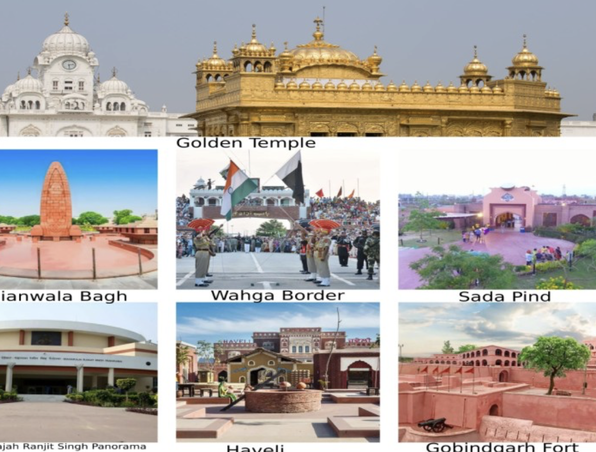
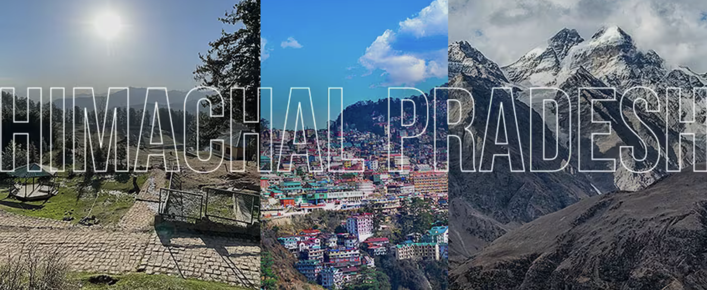
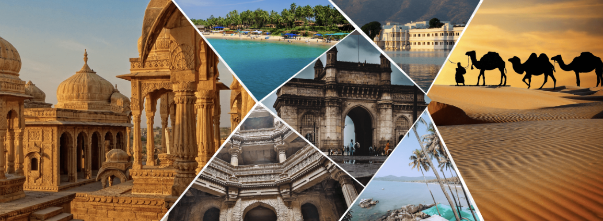
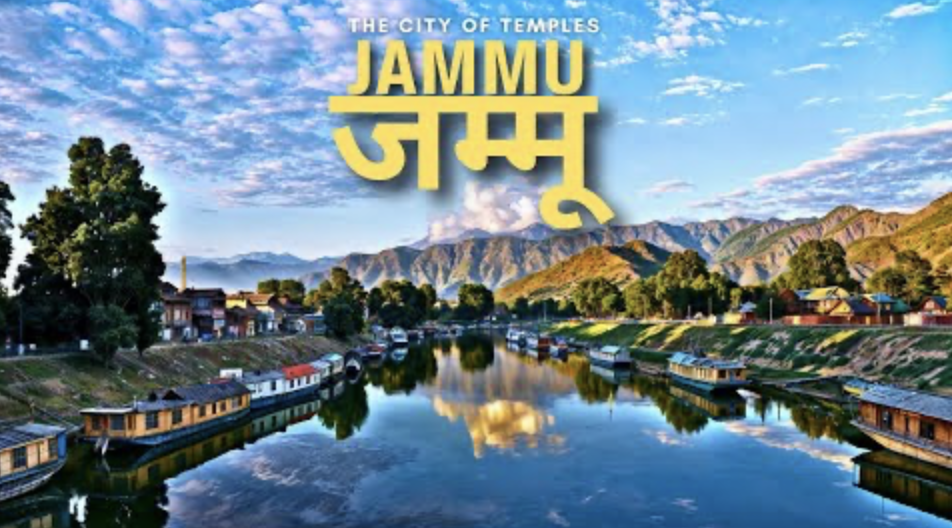
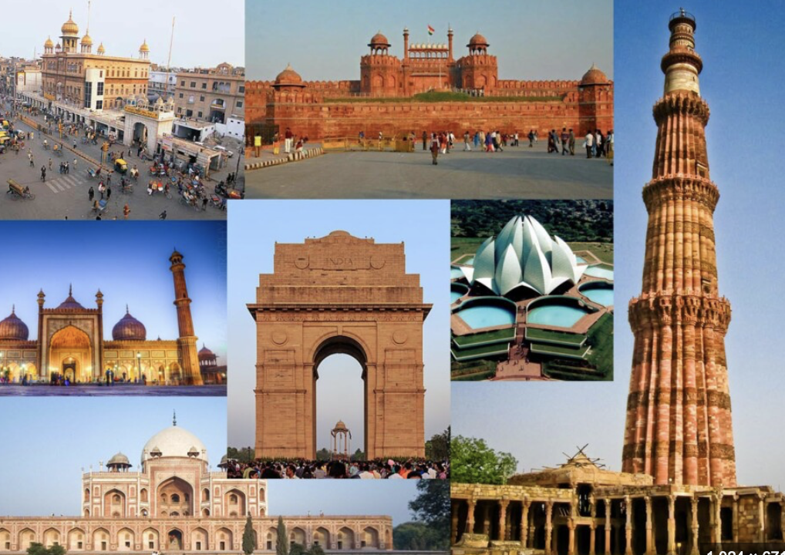
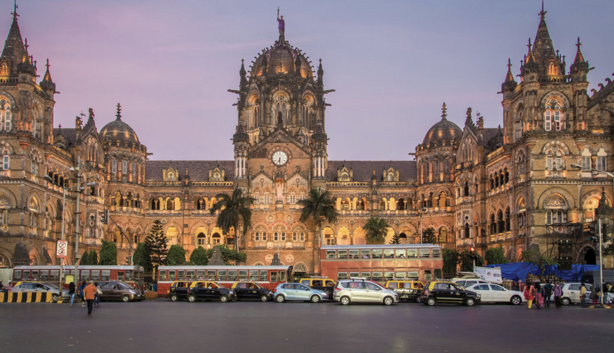
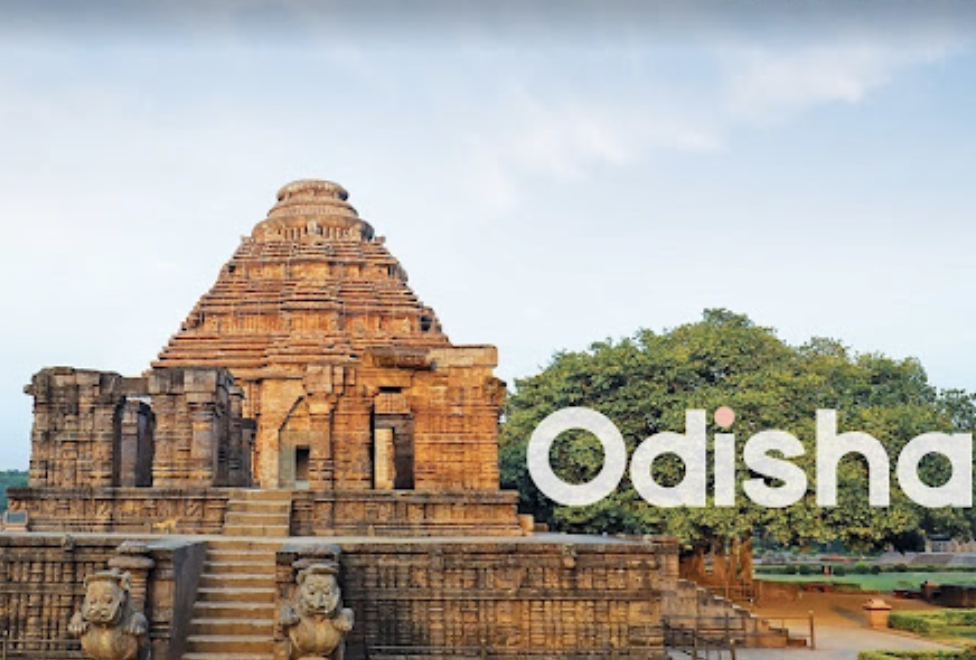
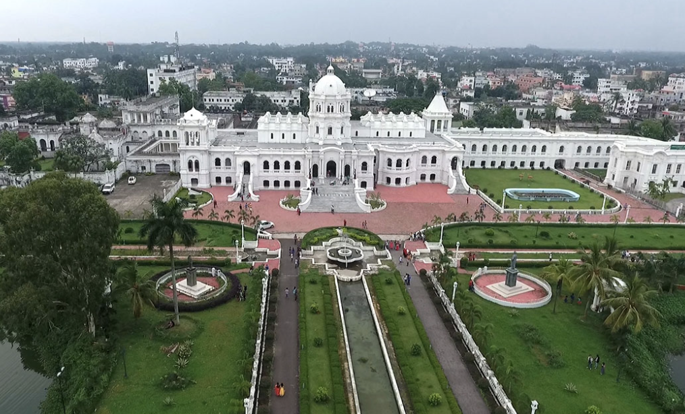

The Indian State of Punjab was created in 1947, when the partition of India split the former Raj province of Punjab between India and Pakistan. The mostly Muslim western part of the province became Pakistan's Punjab Province; the mostly Sikh eastern part became India's Punjab state.
Himachal Pradesh became a Union Territory on 1 November 1956. On 18 December 1970 the State of Himachal Pradesh Act was passed by Parliament and the new state came into being on 25 January 1971. Thus Himachal emerged as the eighteenth state of the Indian Union.
Gujarat draws its name from the Gurjara (supposedly a subtribe of the Huns), who ruled the area during the 8th and 9th centuries ce. The state assumed its present form in 1960, when the former Bombay state was divided between Maharashtra and Gujarat on the basis of language.
Gait ( 1897) had made reference to the nine line inscription of Harjjar Varma in his ''A History of Assam. '' The inscription is the first recorded history of Assam and dates back to 829 A.D. The inscription was found engraved on a massive stone some two kms away from Tezpur town situated near a temple called Rudrapad.

A succession of Hindu dynasties ruled Kashmir until 1346, when it came under Muslim rule. The Muslim period lasted nearly five centuries, ending when Kashmir was annexed to the Sikh kingdom of the Punjab in 1819 and then to the Dogra kingdom of Jammu in 1846.

According to Tarikh-i-Azmi, Jammu came into existence around 900 CE. The state of Durgara (modern forms "Duggar" and "Dogra)") is also attested from around this time. The capital of the Durgara state at that time is believed to have been Vallapura (identified with modern Billawar).
It was ruled by the Kadamba dynasty from the 2nd century ce to 1312 and by Muslim invaders of the Deccan from 1312 to 1367. The city was then annexed by the Hindu kingdom of Vijayanagar and was later conquered by the Bahmanī sultanate, which founded Old Goa on the island in 1440.

From the early 13th century until the mid-19th century, Delhi was the capital of two major empires, the Delhi Sultanate and the Mughal Empire, which covered large parts of South Asia. All three UNESCO World Heritage Sites in the city, the Qutub Minar, Humayun's Tomb, and the Red Fort, belong to this period.
Mumbai emerged as a significant trading town during the mid-18th century. From 1782 onwards, the city was reshaped with large-scale civil engineering projects aimed at merging all the seven islands of Bombay into a single amalgamated mass by way of a causeway called the Hornby Vellard, which was completed by 1784.
The history of Odisha begins in the Lower Paleolithic era, as Acheulian tools dating to the period have been discovered in various places in the region. The early history of Odisha can be traced back to writings found in ancient texts like the Mahabharata, Maha Govinda Sutta and some Puranas.
Tripura is claimed to be one of the oldest princely State of ancient India. The princely rulers of Tripura claimed to have been descended from the Yoyati of the Lunar Dynasty of the Mahabharata. The king Yoyati's successor king Druhya, king Bavru, king Pratardan, king Daitya, king Tripur and king Trilochana.
